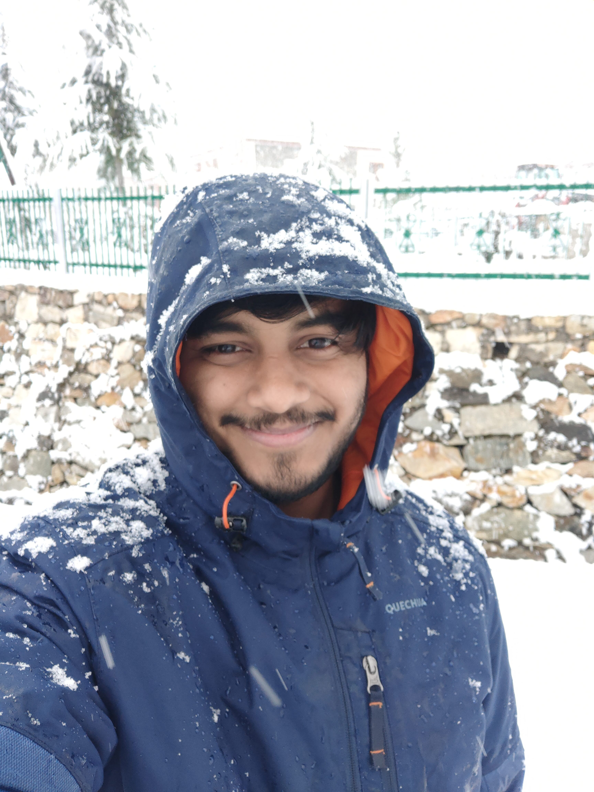

MS in Computer Science
Georgia Institute of Technology
Georgia Institute of Technology
tushartyagi1811@gmail.com
News
- [Aug 2025] Started MSCS @ Georgia Tech!
- [July 2025] Left role as Machine Learning Engineer 2 at Adobe after 4 years
- [Sept 2024] My patent on page boundary detection published!
- [Dec 2023] Runner-Up: Document Cloud India Hackweek
- [June 2023] Winner: Acrobat Desktop Ideathon
Bio
I am a graduate student in Computer Science at Georgia Tech with a focus on ML and Computer Vision.
Previously, I was a Machine Learning Engineer at Adobe, working on real-time document intelligence and computer vision systems.
My interests include Computer Vision, AI, LLMs, MLOps, and building efficient AI systems.
I have intensively pursued the art of photography, and hence a natural interest lies in the field of computer vision.
I have been fortunate to have my work recognized in various photography contests and exhibitions.
Patent
- US20240404070A1: Precise book page boundary detection using deep ML model and image processing algorithms. Published Sept 2024.
Education
-
Georgia Institute of Technology — MS in Computer Science, Machine Learning Specialization
Aug 2024 – Present
GPA: 4.0/4.0 -
Indian Institute of Technology Mandi — B.Tech in Computer Science, Minor in Management Studies
Aug 2017 – June 2021
CGPA: 8.39/10.00
Experience
-
Machine Learning Engineer 2, Adobe
July 2021 – July 2025
Developed real-time document classification models with 90% accuracy, boosting feature MAU by 50%.
Optimized ML model pipelines and reduced model sizes, improving performance and user experience.
Implemented boundary detection and segmentation models, increasing accuracy by up to 30%.
Created LLM-based solutions for AI assistant features and real-time troubleshooting.
Technologies: Python, PyTorch, Keras, TensorFlow Lite, Computer Vision, Prompt Engineering. -
Product Development Intern, Furrble
Jan 2021 – Feb 2021
Developed CRUD API endpoints for the mobile app using GoLang. -
Product Development Intern, Adobe
May 2020 – July 2020
Developed smart image cleaning tools using image processing and deep learning.
Created synthetic data generation scripts using VBA.
Achievements
- Winner: Acrobat Desktop Ideathon (June 2023)
- Star of the Month Award, Adobe (Sept 2022)
- 3rd Position, Freshmen Innovation Challenge, IIT Mandi (2018)